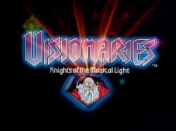

Visionaries title card © 1987 Hasbro / Sunbow Productions / TMS. Used for classroom teaching.
Visionaries (1987, US): on the planet Prysmos, technology stops working. The wizard Merklynn gives the knights who survive animal totems and magic staffs, and they split into two orders: the heroic Spectral Knights and the villainous Darkling Lords.
A totem cut out from its background would be a PNG, because PNG keeps the transparency. A title card like this one is a scan, so it is a JPG.